1 イトコン
1/49｜2026/08/01
6VBM1
多了哪些牌
+1
少了哪些牌
-1
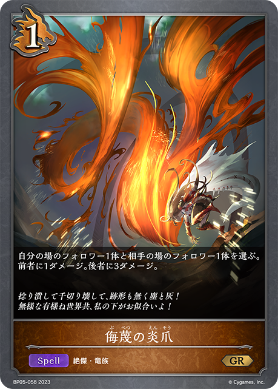
主BP05-058/BP05-P27：侮蔑の炎爪主卡组 × 3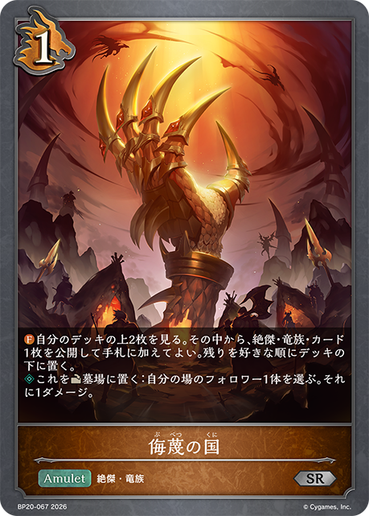
主BP20-067/BP20-P35：侮蔑の国主卡组 × 3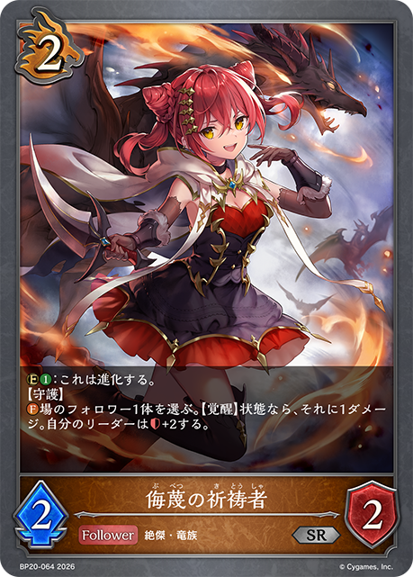
主BP20-064/BP20-P33：侮蔑の祈祷者主卡组 × 3 主BP08-063/PR-202：侮蔑の狂信者主卡组 × 3
主BP08-063/PR-202：侮蔑の狂信者主卡组 × 3 主PR-010/PR-209/SD04-002：竜の託宣主卡组 × 3
主PR-010/PR-209/SD04-002：竜の託宣主卡组 × 3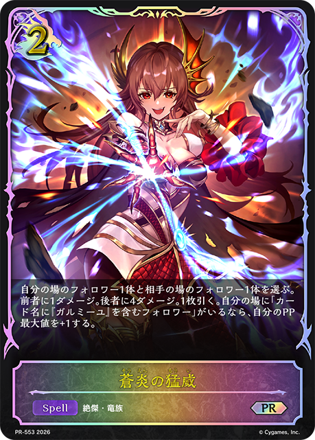
主BP20-063/PR-553：蒼炎の猛威主卡组 × 3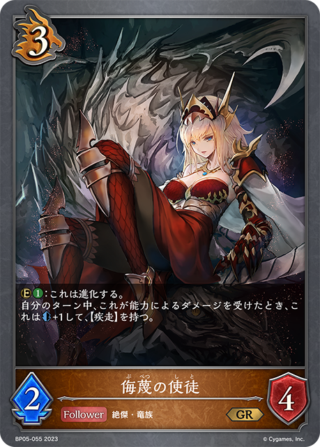
主BP05-055/BP05-P25：侮蔑の使徒主卡组 × 2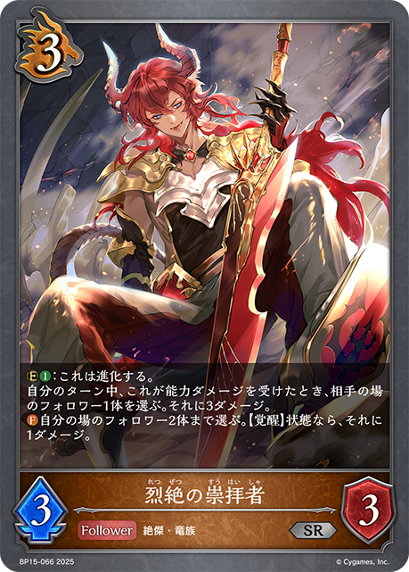
主BP15-066/BP15-P14：烈絶の崇拝者主卡组 × 3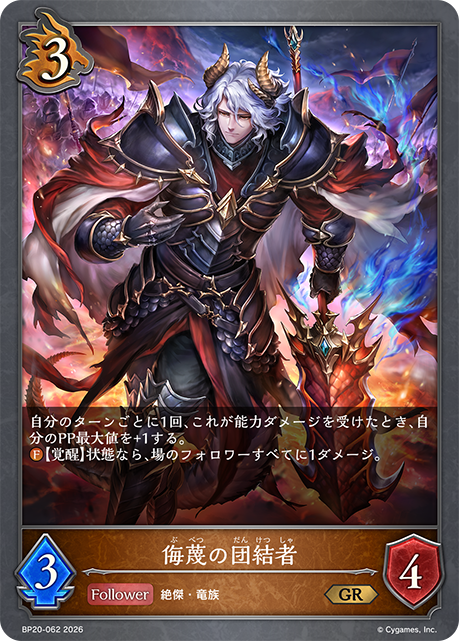
主BP20-062/BP20-P32：侮蔑の団結者主卡组 × 3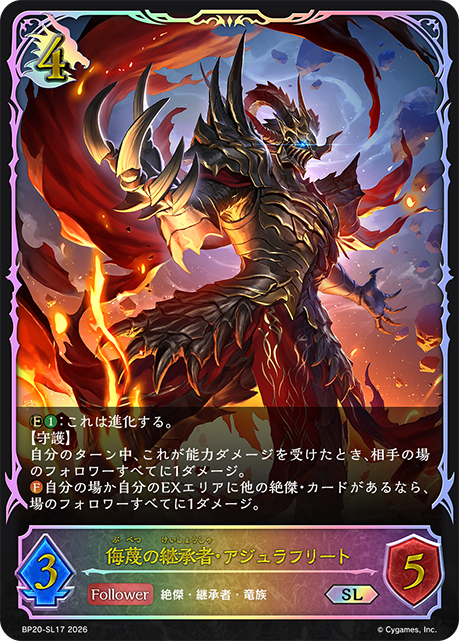
主BP20-057/BP20-SL17：侮蔑の継承者・アジュラフリート主卡组 × 2 主BP15-057/BP15-U04：烈絶の侮蔑・ガルミーユ主卡组 × 3
主BP15-057/BP15-U04：烈絶の侮蔑・ガルミーユ主卡组 × 3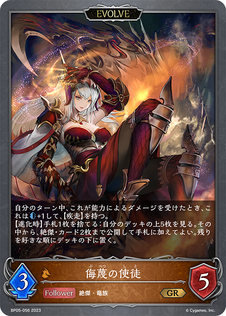
进BP05-056/BP05-P26：侮蔑の使徒进化 × 2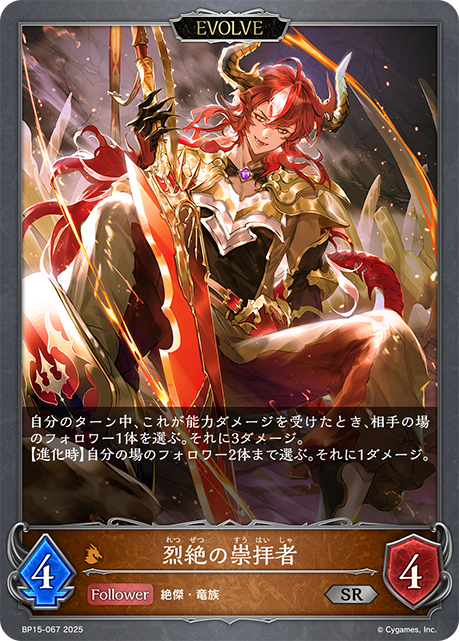
进BP15-067/BP15-P15：烈絶の崇拝者进化 × 2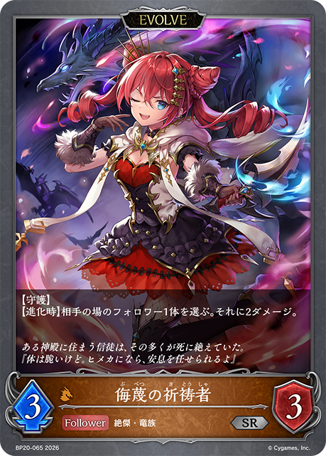
进BP20-065/BP20-P34：侮蔑の祈祷者进化 × 1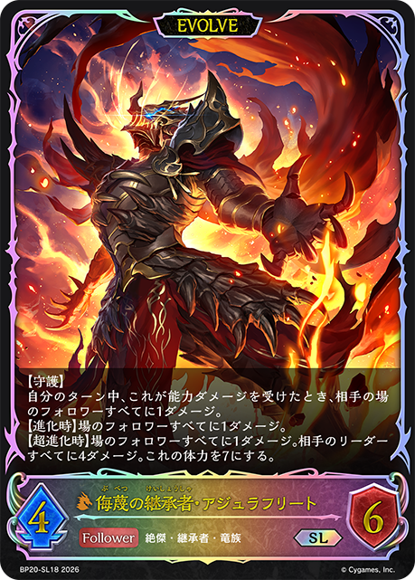
进BP20-058/BP20-SL18：侮蔑の継承者・アジュラフリート进化 × 2 +2
+2 +2
+2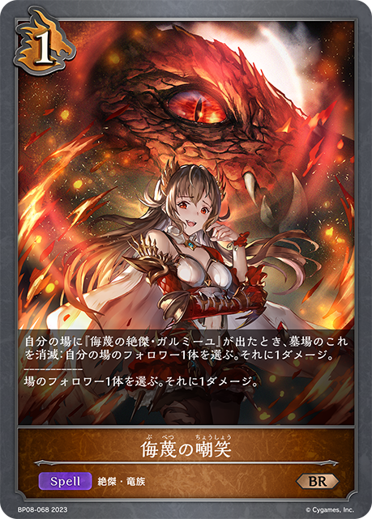
+1 +1-1-1
+1-1-1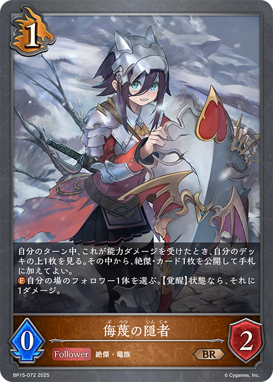
+2+1-1-1-1-1+2+2+2+1+1-2-2-1-1-1-1+2+2+1+1-2-2-1-1+2+2+1+1+2+2+1+1-1-1-1+2+2+2+1+1 +1-1-1-1+2+2+1+1+2+2+1+1-2-1-1-1-1-1-1-1-1-1+2+1+1+1-1-1-1+2+2+1+1-1-1+3+2+1+1-1-1+2+2+1+1-1-1-1+1+1+1+1-1-1+2+2+2+1+1-2-2-1-1+2+2+1+1-1-1-1+2+2+1+1-3-2-2-1-1+2+2+2+1+1-2-1-1-1-1+2+2+1+1-1-1
+1-1-1-1+2+2+1+1+2+2+1+1-2-1-1-1-1-1-1-1-1-1+2+1+1+1-1-1-1+2+2+1+1-1-1+3+2+1+1-1-1+2+2+1+1-1-1-1+1+1+1+1-1-1+2+2+2+1+1-2-2-1-1+2+2+1+1-1-1-1+2+2+1+1-3-2-2-1-1+2+2+2+1+1-2-1-1-1-1+2+2+1+1-1-1| 图片 | 平均张数 | 使用率 | 0张比例 | 1张比例 | 2张比例 | 3张比例 |
|---|---|---|---|---|---|---|
| 3.00 | 100.0% | 0.0% | 0.0% | 0.0% | 100.0% | |
|
3.00 | 100.0% | 0.0% | 0.0% | 0.0% | 100.0% |
| 3.00 | 100.0% | 0.0% | 0.0% | 0.0% | 100.0% | |
| 3.00 | 100.0% | 0.0% | 0.0% | 0.0% | 100.0% | |
| 3.00 | 100.0% | 0.0% | 0.0% | 0.0% | 100.0% | |
|
3.00 | 100.0% | 0.0% | 0.0% | 0.0% | 100.0% |
| 2.97 | 100.0% | 0.0% | 0.0% | 3.0% | 97.0% | |
| 2.94 | 100.0% | 0.0% | 0.0% | 6.1% | 93.9% | |
| 2.94 | 100.0% | 0.0% | 0.0% | 6.1% | 93.9% | |
| 2.88 | 100.0% | 0.0% | 3.0% | 6.1% | 90.9% | |
| 2.42 | 100.0% | 0.0% | 0.0% | 57.6% | 42.4% | |
|
2.12 | 97.0% | 3.0% | 15.2% | 48.5% | 33.3% |
| 1.03 | 87.9% | 12.1% | 75.8% | 9.1% | 3.0% | |
| 1.55 | 81.8% | 18.2% | 24.2% | 42.4% | 15.2% | |
| 1.12 | 69.7% | 30.3% | 30.3% | 36.4% | 3.0% | |
|
1.09 | 54.5% | 45.5% | 3.0% | 48.5% | 3.0% |
| 0.94 | 42.4% | 57.6% | 3.0% | 27.3% | 12.1% | |
|
0.06 | 6.1% | 93.9% | 6.1% | 0.0% | 0.0% |
|
0.03 | 3.0% | 97.0% | 3.0% | 0.0% | 0.0% |
| 图片 | 平均张数 | 使用率 | 0张比例 | 1张比例 | 2张比例 | 3张比例 |
|---|---|---|---|---|---|---|
| 2.58 | 100.0% | 0.0% | 0.0% | 42.4% | 57.6% | |
| 2.09 | 100.0% | 0.0% | 0.0% | 90.9% | 9.1% | |
| 1.91 | 100.0% | 0.0% | 12.1% | 84.8% | 3.0% | |
| 1.33 | 81.8% | 18.2% | 33.3% | 45.5% | 3.0% | |
| 1.06 | 69.7% | 30.3% | 33.3% | 36.4% | 0.0% | |
|
1.03 | 54.5% | 45.5% | 6.1% | 48.5% | 0.0% |